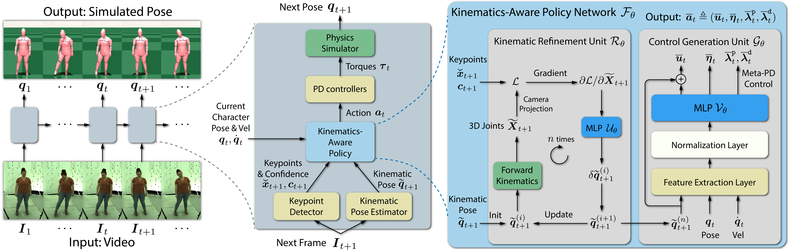

Abstract
Accurate estimation of 3D human motion from monocular video requires modeling both kinematics (body motion without physical forces) and dynamics (motion with physical forces). To demonstrate this, we present SimPoE, a Simulation-based approach for 3D human Pose Estimation, which integrates image-based kinematic inference and physics-based dynamics modeling. SimPoE learns a policy that takes as input the current-frame pose estimate and the next image frame to control a physically-simulated character to output the next-frame pose estimate. The policy contains a learnable kinematic pose refinement unit that uses 2D keypoints to iteratively refine its kinematic pose estimate of the next frame. Based on this refined kinematic pose, the policy learns to compute dynamics-based control (e.g., joint torques) of the character to advance the current-frame pose estimate to the pose estimate of the next frame. This design couples the kinematic pose refinement unit with the dynamics-based control generation unit, which are learned jointly with reinforcement learning to achieve accurate and physically-plausible pose estimation. Furthermore, we propose a meta-control mechanism that dynamically adjusts the character's dynamics parameters based on the character state to attain more accurate pose estimates. Experiments on large-scale motion datasets demonstrate that our approach establishes the new state of the art in pose accuracy while ensuring physical plausibility.
Overview
5min Talk
Results Video
Visualization

Citation
@inproceedings{yuan2021simpoe,
title={SimPoE: Simulated Character Control for 3D Human Pose Estimation},
author={Yuan, Ye and Wei, Shih-En and Simon, Tomas and Kitani, Kris and Saragih, Jason},
booktitle={Proceedings of the IEEE/CVF Conference on Computer Vision and Pattern Recognition (CVPR)},
year={2021}
}
|
Template adapted from GLAMR. |